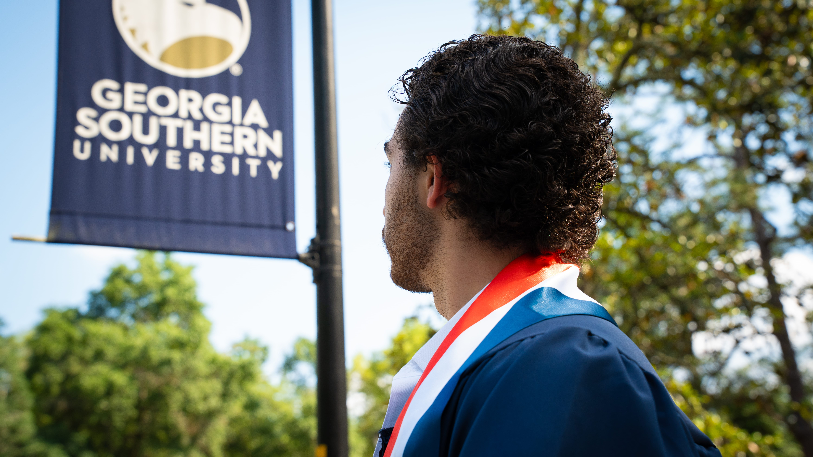
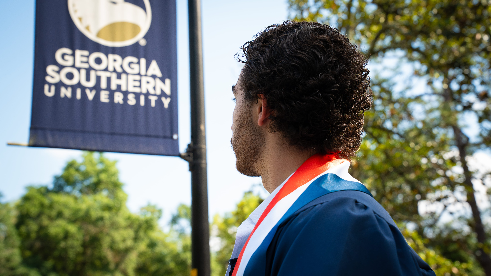

Photography
A selection from a senior recital and professional showcase shoot — composed and lit to highlight expression, elegance, and presence.


Senior Graduation Photos
Captured moments of celebration and achievement — these graduation portraits reflect joy, pride, and the beauty of a milestone fulfilled.


 
